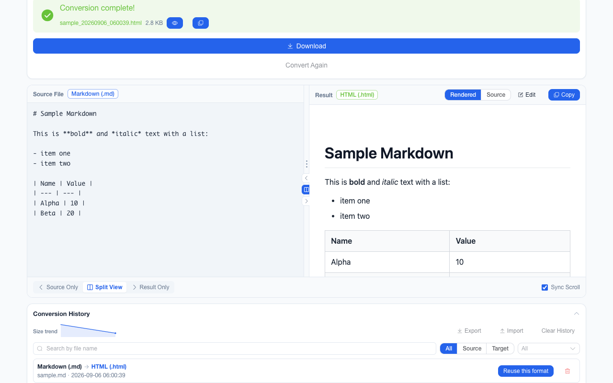
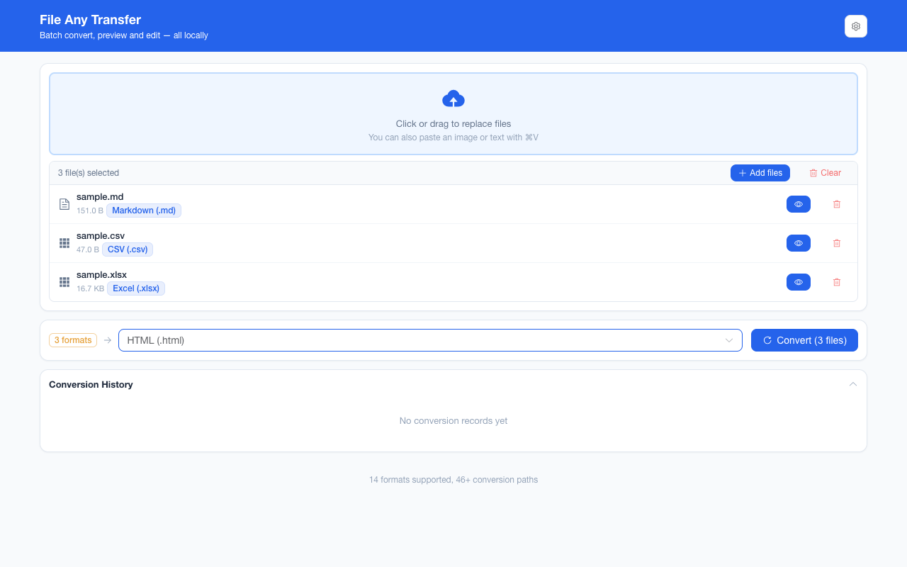
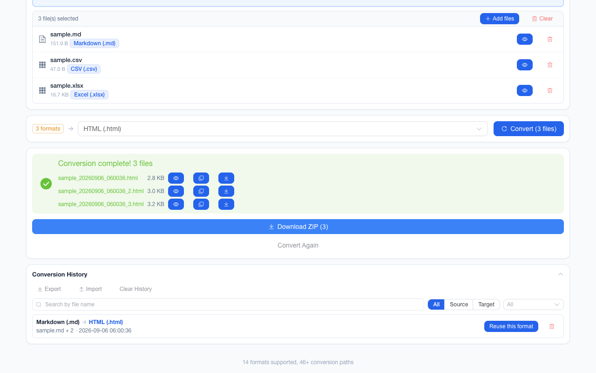
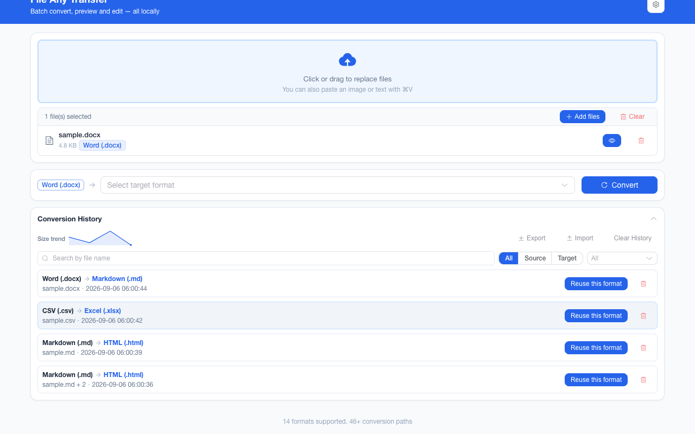
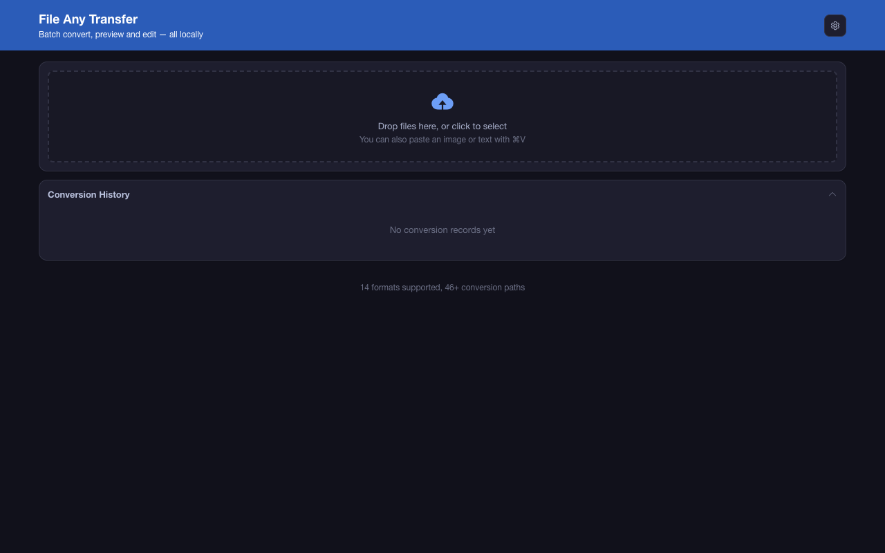

Convert 14 file formats
without uploading a byte.
File Any Transfer is an offline file format converter for Chrome. Markdown, Word, PDF, Excel, CSV, JSON, HTML and images convert inside a tab on your own machine — batch, multi-step, preview and edit included. No uploads, no account, no network requests.
Install from source View on GitHub 简体中文
storage)

Why people stop using online converters
A converter that runs in your browser has one structural advantage over one that runs on someone else's server: your file never becomes their copy.
Confidential by default
Contracts, payroll sheets, medical reports, unpublished drafts — converted without a copy ever existing on third-party infrastructure or in its access logs.
No quota, no account
No sign-in, no daily limit, no "3 free conversions" gate, no watermark, and no size ceiling beyond the 100 MB per-file cap your own browser can hold in memory.
Works with the wifi off
Converters, fonts and interface all ship inside the extension. On a plane, inside a locked-down network, or during an outage, behaviour is identical.
Faster than an upload
A 3 MB document converts in well under a second, because the round trip is memory-to-memory rather than memory-to-datacenter-and-back.
Which formats convert to which
Fourteen formats in three families. Each conversion pair registers as an edge in a graph, so multi-step routes are discovered rather than hard-coded: Markdown → PDF runs as Markdown → HTML → PDF from a single click.
| Family | Reads | Writes | Typical route |
|---|---|---|---|
| Documents | Markdown, HTML, Word (.docx), PDF, TXT | Markdown, HTML, Word (.docx), PDF, TXT | MD → HTML → PDF · DOCX → HTML → MD · TXT → HTML → DOCX |
| Data | CSV, Excel (.xlsx), JSON | CSV, Excel (.xlsx), JSON | XLSX → CSV · JSON → HTML → XLSX · CSV → HTML → MD |
| Images | PNG, JPEG, WebP, BMP, GIF, SVG | PNG, JPEG, WebP | SVG → PNG · GIF → PNG (first frame) · PNG → PDF |
What it deliberately does not do
- No OCR. Images cannot become TXT / CSV / XLSX — that needs an OCR model, which would add tens of megabytes and a download, breaking the offline guarantee. Those targets are greyed out with the reason instead of failing later.
- PDF output is image-based. Text in a converted PDF is not selectable.
- PDF input is text-only. Layout and embedded images are not preserved.
- BMP, GIF and SVG are input-only. Browsers expose no encoders for them.
- No video, audio, archive creation or compression of images. ZIP is used to bundle results, not as a target format.
What it does beyond a single conversion
The features that matter when the job is "all of these files", not "this one file".
Mixed-format batches
Drop 40 files of different types. Each resolves its own route to the shared target, and only formats reachable from every selected file are offered.
Failure isolation
One unreadable file never blocks the rest. Failures are listed per file with the reason, and a long batch can be cancelled with finished results kept.
One ZIP, sensibly compressed
Text results are deflated (~10× smaller); already-compressed outputs such as PNG, PDF and XLSX are stored as-is so no CPU is wasted. Multi-page PDFs and multi-sheet workbooks split per page / sheet.
Preview, compare, edit
Source and result side by side with a draggable divider and sync scroll; text results can be edited before download.
Paste and archive intake
Ctrl/⌘+V converts a clipboard image or text block; dropping a
.zip adds its supported contents to the batch.
History you can trust
Last 50 conversions as metadata only — searchable by file name, filterable, reusable in one click, exportable and importable as JSON.
Excel-friendly CSV
Reads UTF-8 with automatic GBK fallback and writes UTF-8 with BOM, so Chinese spreadsheets open without mojibake in either direction.
Keyboard and a11y
Rebindable convert shortcut, skip link, visible focus rings,
prefers-reduced-motion support, and always-visible surfaces measured at WCAG 2.1 AA across
all 6 themes × light/dark.
Yours to look like
6 accent colours × light / dark / follow-system, and a Chinese or English interface — chosen once, remembered locally.
Local extension vs. online converter
Honest trade-off: online services cover far more formats (video, audio, e-books, CAD) because they can run heavy servers. Where a browser can decode the format, a local converter wins on privacy, speed and limits.
| Dimension | File Any Transfer (local) | Upload-based converter |
|---|---|---|
| Your file leaves the device | Never | Always (that is the mechanism) |
| Account / sign-in | Not required | Often for full features |
| Free-tier limits | 100 MB per file, 200 files per batch | Daily quotas, size caps, watermarks |
| Works offline / on a plane | Yes | No |
| Batch of mixed formats | Yes, one target for the whole batch | Usually paid or queue-bound |
| Format breadth | 14 document / data / image formats | Hundreds, incl. video and audio |
| OCR, complex PDF layout repair | Not bundled | Commonly offered |
| Source code | Open source (ISC) | Closed |
Install and use
Not on the Chrome Web Store yet, so today it is a load-unpacked install. Five steps, about a minute.
- Install pnpm and Node.js 20.12 or later.
- Clone the repository and build it.
- Open
chrome://extensionsand switch on Developer mode. - Click Load unpacked and choose
.output/chrome-mv3. - Click the toolbar icon — the workbench opens in a new tab.
git clone https://github.com/<GH_OWNER>/file-format-converter.git
cd file-format-converter
pnpm install
pnpm buildDaily flow
- Drop, pick or paste your files.
- Choose the target format — unreachable ones are greyed out with a reason.
- Press Convert (or Ctrl/⌘+Enter).
- Preview, edit if needed, then download one file or the whole batch as a ZIP.
The workbench




Privacy and permissions
The extension requests exactly one permission, storage, for history and preferences. It
declares no host permissions and contains no network call, so there is no path by which a file could be
transmitted. Full text: Privacy policy.
| Data | Where it lives | Transmitted? |
|---|---|---|
| Your files | Memory of the extension tab, only while converting | Never |
| History (names, formats, sizes) | chrome.storage.local on this machine |
Never |
| Preferences (theme, language, shortcuts) | chrome.storage.local on this machine |
Never |
| Analytics / telemetry / ads | Not implemented | n/a |
Frequently asked questions
- Does File Any Transfer upload my files?
-
No. Every converter is JavaScript bundled into the extension, the manifest declares only the
storagepermission, and the code contains nofetch,XMLHttpRequest,WebSocketorsendBeaconcall. There is no server to upload to, and the extension works with networking disabled. - Which file formats can it convert?
- Fourteen formats across three families: documents (Markdown, HTML, Word .docx, PDF, TXT), data (CSV, Excel .xlsx, JSON) and images (PNG, JPEG, WebP, BMP, GIF, SVG). That yields 46+ direct conversion routes, and the workbench chains them automatically — Markdown to PDF runs as Markdown to HTML to PDF in one click.
- Can it convert a PDF into an editable Word document?
- Not losslessly. PDF input extracts text only, dropping layout and embedded images, and PDF output is rendered page by page as images, so text in a converted PDF is not selectable. Word and Excel convert through HTML as the hub format.
- Why can't I convert an image to text or CSV?
- That requires OCR. Bundling an OCR model would add tens of megabytes and a model download, which conflicts with the offline guarantee, so it is not included. Those targets are greyed out in the format picker with the reason shown, rather than failing after you press Convert.
- Is it free, and is there a paid version?
- It is free and open source under the ISC licence. There is no paid tier, no account, no telemetry and no advertising — the extension has no code path that could report usage.
- What are the file size and batch limits?
- A single file up to 100 MB is accepted (the UI warns above 20 MB), and a batch is capped at 200 files. Batches larger than 5 files or 20 MB in total ask for confirmation first, which you can switch off in Preferences.
- How do I install it before it is on the Chrome Web Store?
-
Build from source with Node.js 20.12 or later and pnpm: run
pnpm installandpnpm build, then openchrome://extensions, enable Developer mode, click Load unpacked and select the.output/chrome-mv3folder. Clicking the toolbar icon opens the workbench in a new tab. - Does it work in Firefox or Edge?
-
The build targets Chrome Manifest V3, so it runs in Chrome and other Chromium browsers such as Edge.
Firefox is not a supported target today, although the extension uses no Chrome-only APIs beyond the
standard
storageandactionones.
Technical details
Built with
WXT · Vue 3 · TypeScript · Element Plus · Vite. Heavy conversion libraries are dynamically imported per converter, so first paint stays small.
Requirements
Google Chrome 88 or later, or any Chromium browser that supports Manifest V3 (Edge included). Building from source needs Node.js ≥ 20.12 and pnpm.
Verified by tests
A Playwright suite drives the built bundle over 159 assertions with repository fixtures, including per-theme contrast checks for the always-visible surfaces.
Untrusted input handling
Every HTML, SVG and Markdown produced from a user file is sanitised before rendering, and previews run in a sandboxed frame.
Version 1.0.0 · last updated 2026-09-06. Screenshots on this page are generated from the
built bundle by pnpm assets:capture, so they cannot drift from what the extension actually
does.